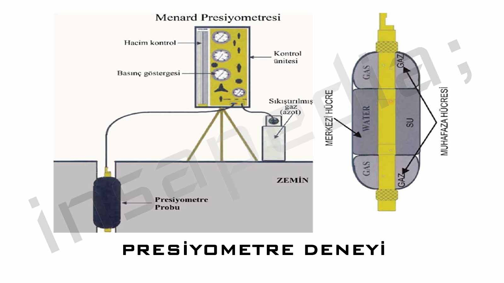
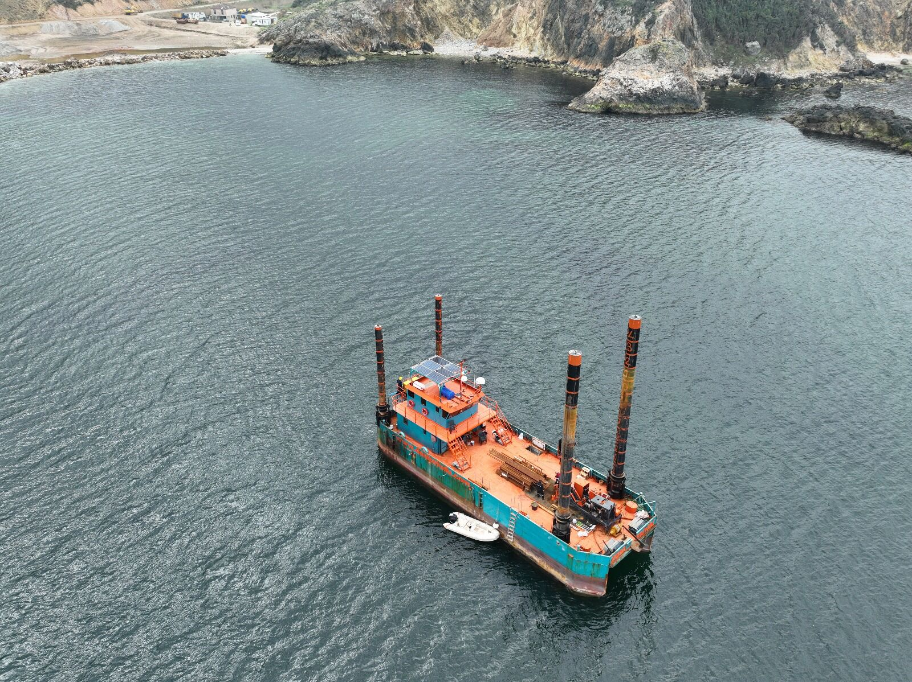
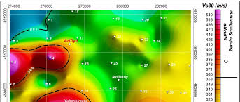
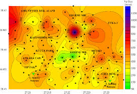
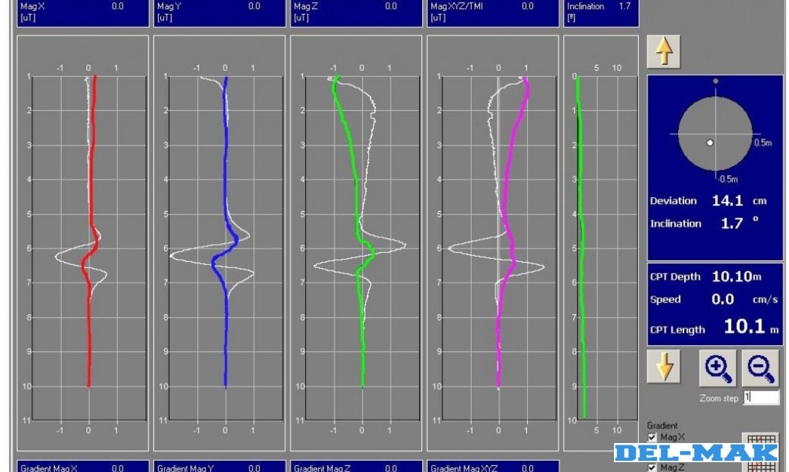
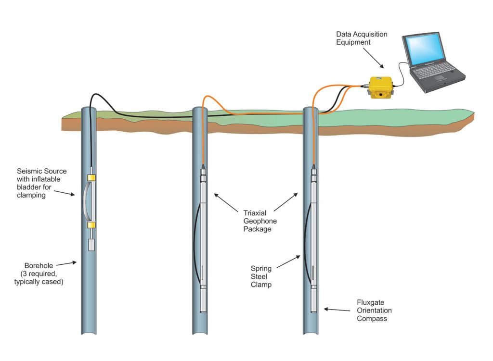
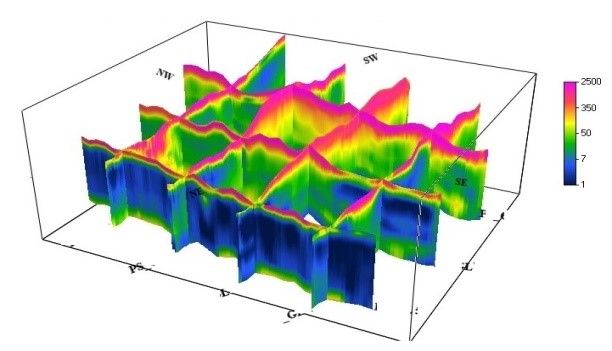
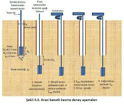

Sondaj teknolojileri, jeofizik yöntemler ve sektörden güncel içerikler.

Bu testte, yer altında açılan bir deliğe özel bir balon yerleştirilir ve şişirilerek zeminin ne kadar genişlediği ölçülür. Prensibi çok basit: zemin, yük altındaki davranışını doğrudan bu şişme miktarıyla gösterir. Bu deneyle zeminin taşıma gücü ve deformasyon özellikleri belirlenir. Özellikle yüksek yük taşıyacak temellerde tercih edilir.

ZT Blog
MASW, zemine verilen yapay titreşimlerin yayılma hızını ölçerek yer altı katmanlarını analiz eder. Temel prensibi şudur: Dalga, yumuşak zeminde yavaş, sert zeminde hızlı yayılır. Bu hız farkları sayesinde katman kalınlığı ve zemin sınıfı belirlenir. Deprem etkilerine karşı zemin davranışını anlamakta çok kullanılır.

Mikrotremör, zeminin doğal olarak sürekli titreştiği, insan kulağının duyamayacağı düzeydeki küçük sarsıntılardır. Bu yöntemde, herhangi bir dış kuvvet uygulamadan, sadece doğadaki titreşimleri ölçeriz. Prensip olarak, zeminin kendi doğal frekansını belirlemeyi amaçlar. Özellikle yapı-zemin etkileşimini ve deprem rezonansını değerlendirmede çok etkilidir.

Bu yöntemde zemine çelik bir koni bastırılarak ilerlenir ve koninin karşılaştığı direnç sürekli olarak ölçülür. Sarsıntısız ve çok hassas bir testtir. Zemin geçişleri, katman kalınlıkları ve taşıma gücü hakkında anlık ve ayrıntılı bilgi verir. Özellikle dolgu alanlarındaki belirsizliği gidermede etkilidir.

Zemindeki sismik dalgaların (P ve S dalgaları) ne kadar hızlı hareket ettiğini ölçerek zemin türünü belirleriz. Hız ne kadar fazlaysa, zemin o kadar sağlamdır. Bu ölçümler için genellikle daha önceden açılmış sondaj kuyuları kullanılır. Deprem mühendisliği projelerinde kritik veriler sağlar.

Bu yöntemde yere elektrotlar yerleştirip elektrik akımı verilir ve zeminin bu akıma gösterdiği direnç ölçülür. Her zemin türü farklı direnç gösterdiği için, yer altı haritası çıkarılır. Suya doygun zeminler, kuru kayalar ya da dolgu alanları bu yöntemle ayırt edilebilir. Geniş alanlarda hızlı ve etkili çözüm sunar.

Özellikle yumuşak killerde kullanılır. Zemine batırılan kanatlı bir çubuk belirli hızda çevrilerek zeminin ne kadar direndiği ölçülür. Ne kadar çok dönerse, zemin o kadar yumuşak demektir. Bu deney zeminin "kaymaya karşı direncini" doğrudan gösterir.
Zemin Teknik hakkında merak edilen sorular ve detaylı cevapları. Eğer aradığınız soruyu bulamazsanız bizimle iletişime geçebilirsiniz.
Sahanızı ve hedeflerinizi anlatın; uzman ekibimiz ekipman, süre ve maliyet içeren net bir teklif hazırlasın.